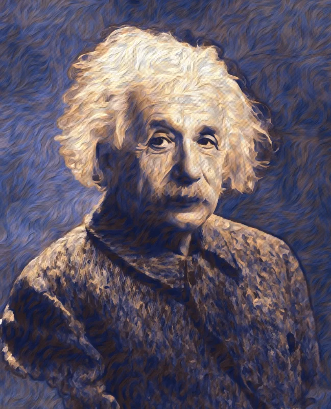

Prototype P1 · living painted portrait
Albert Einstein
AI voice reading Einstein's own words, from his letter to President Franklin D. Roosevelt, 2 August 1939. The voice is synthetic, not Einstein's. Portrait: painted by our filter from a public-domain photograph; the motion is added.

Transcript and source
"Some recent work by E. Fermi and L. Szilard, which has been communicated to me in manuscript, leads me to expect that the element uranium may be turned into a new and important source of energy in the immediate future."
Albert Einstein to Franklin D. Roosevelt, 2 August 1939, first sentence. Original held by the Franklin D. Roosevelt Presidential Library. Wording checked 2026-10-09 against the German Historical Institute's transcription: GHDI. The letter was drafted with Leo Szilard. Voice: Kokoro-82M (Apache-2.0), voice bm_george. Portrait source: Library of Congress 2004671908.